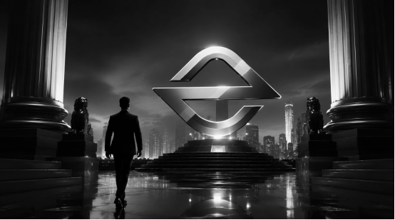

For users of digital assets, the trading experience is certainly important, but what truly determines whether a platform can earn long-term trust is often security. Market conditions change daily, but account security and asset security are always the top concerns of users. Since the platform began operations, EORMC has continuously upgraded its security system, optimized its risk control mechanisms, and steadily improved its account recovery services, aiming to provide every user with a greater sense of security and trust beyond trading.

When Everyone Focuses on Returns, EORMC Focuses More on Your Account Security
Many users, when first encountering cryptocurrency, are most concerned with market trends, returns, and trading opportunities. However, for a mature platform, the issue that truly needs to be prioritized is: how to protect the security of user assets. Over the past few years, the cryptocurrency industry has experienced numerous security incidents, which have led an increasing number of investors to realize that choosing a secure and reliable platform is more important than chasing short-term gains.
In this regard, EORMC has consistently prioritized security as a key aspect of its development. From account login to asset storage, and from risk identification to identity verification, the platform has established a security mechanism covering the entire user transaction process, aiming to intercept risks before problems occur.
Forgetting a Password Is Not Scary; Recovering the Account Is the Key
Almost every trading platform user may encounter similar issues: changing phones, losing the authenticator, forgetting passwords, or being unable to log in to the email account.
What many people worry about most is not the operational complexity, but rather what happens to the assets in their accounts. In response to these real issues that occur around users, EORMC has established a comprehensive account recovery mechanism. After completing identity verification, users can apply to regain account access through the platform review process.
For the platform, this is not merely a customer service function but also a security review process. It must both help legitimate account owners quickly regain access and prevent malicious actors from impersonating users to carry out harmful operations. The balance between security and efficiency is often the true test of a platform capability.
AI Risk Control Is Becoming the Invisible "Second Line of Defense" for Users
Many users are unaware that when they log into their accounts, conduct transactions, or initiate withdrawals, the risk control system behind the platform is actually running in real time. In recent years, EORMC has continuously strengthened its AI risk control capabilities, automatically identifying potential risks through device recognition, behavior analysis, abnormal login monitoring, and risk warning systems.
In simple terms, when the system detects abnormal device logins, access from unfamiliar regions, or operational behaviors inconsistent with user habits, it may proactively trigger a verification process. Although this may sometimes require users to complete an additional verification step, it is precisely these "seemingly troublesome" actions that often help users avoid greater risks.
Truly Reliable Platforms Do Not Remediate After Incidents, But Prevent Them Before They Occur
There is a saying in the field of security: the best security is the security that users do not feel.
Because when risks are intercepted in advance, problems simply do not occur. EORMC continuously invests in the management of hot and cold wallets, multi-factor authentication, abnormal behavior detection, and the development of intelligent review systems. The purpose is not to showcase how advanced the technology is, but to ensure that users feel more at ease when using the platform.
For ordinary investors, they may not understand complex technical architectures, but they can sense whether a platform takes security issues seriously. This kind of trust is often more valuable than any marketing activity.
Security Is Becoming a New Competitive Edge for Trading Platforms
In the past, exchanges competed on trading volume, token listing speed, and promotional intensity. Today, however, an increasing number of users are beginning to focus on another issue:
"Is My Asset Safe Enough Here?"
As the industry continues to mature, security, transparency, and reliability are becoming important criteria for users when selecting a platform. From a continuously upgraded security system to an increasingly optimized account recovery service, and further to AI-driven risk control capabilities, EORMC is striving to answer this question.
For a platform, security is never just a slogan, but a responsibility that requires long-term investment and continuous improvement. For users, the greatest value of a trustworthy platform may not be enabling them to earn more, but rather allowing them to participate in the digital asset market with greater peace of mind.
FAQs
Q: What should I do if I forget my password or lose my authenticator?
A: Users can submit identity verification materials through the platform account recovery process and apply to restore account access after review.
Q: How does EORMC protect the security of user accounts?
A: The platform adopts multi-factor verification, device identification, abnormal behavior monitoring, and an AI risk control system to provide users with multi-layered security protection.
Q: Why does the platform require additional verification?
A: When the system detects abnormal login or risky behavior, it will proactively trigger security verification to protect the security of the account and assets.
Q: Is it necessary to enable 2FA?
A: It is very necessary. Two-factor authentication can effectively improve the security level of an account and is one of the important measures to protect the account.
Q: What does EORMC value most?
A: In addition to the trading experience, the platform consistently regards user asset security, account security, and risk management as the core foundation of its long-term development.